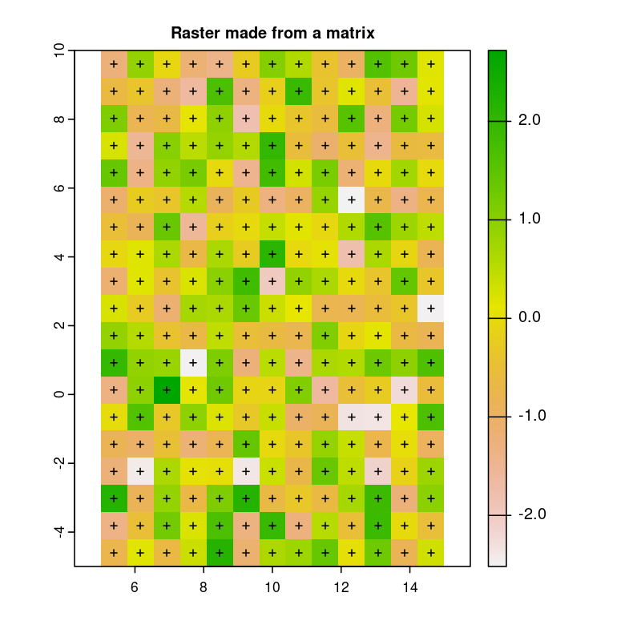
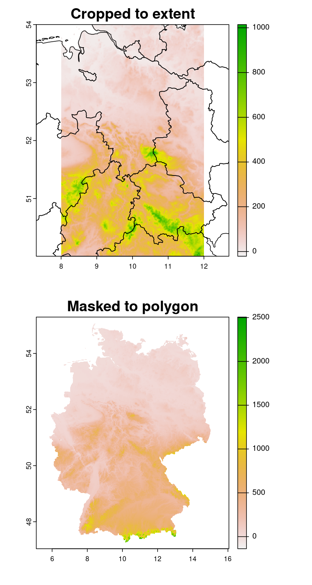
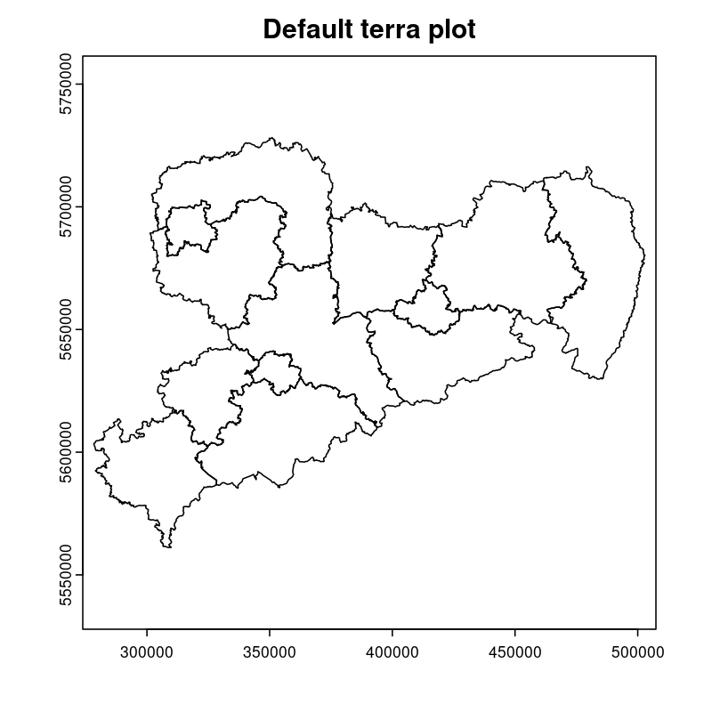

Logical
TRUE, FALSE
Numeric
3, 1.5, pi
Real or decimal, floating numbers
Also known as double
Integer
2L, 11L
Note the L
Introduction to 
Basics, Tidyverse and spatial data
Dánnell Quesada
Ahmed Homoudi

19/09/2022
Outline
Course details
Introduce ourselves
Background
Experience — expectations
Prerequisites
Basics
Reserved words
Data types and structures
Operators
Libraries
Functions
Control structures
Distribution and statistics
Base-R plotting
Tidyverse
Data wrangling
Intro to ggplot2
Spatial data
Rasters
Vectors
Plotting
Course details
You can opt for a certificate of participation
Requisites:
Assist to all lessons (sign attendance sheet daily)
Absence justified only with sick certificate or
major issue
Do all exercises and final presentation
You can work in couples
Background DQ
Studied Civil Engineering at the University of Costa Rica
Worked for 3 years as hydrologist and hydraulic engineer
for hydropower projects
Hydroscience and Engineering masters at the TU Dresden
Master thesis dealt with statistical downscaling of CMIP5
projections for Costa Rica using machine learning (paper)
Doctoral candidate since 2020, ESF scholarship
PhD project DQ
- Working title:
Potential species trajectories under climate change in low mountain ranges (Ore Mountains)
Statistical downscaling of local variables with Deep Learning (DL, paper)
Use CMIP5 — EURO-CORDEX model output to obtain an ensemble of
downscaled climate projections (2005 — 2100)Implement the generated high-resolution climate data in Species
Distribution Models (SDMs) for the Ore MountainsFocus on endangered plant species of the region
Background AH
Studied Civil Engineering at the University of Khartoum, Sudan
Have three years experience in working as Irrigation Engineer at the Sudanese
Federal Ministry of Water resources, Resident Engineer in the Construction Sector
(Sudan), and Teaching Assistant in many sudanese universities
Hydroscience and Engineering masters at the TU Dresden
Master thesis theme: Objective Identification and Characterization of Double ITCZ
in CMIP5 Models and its Effects on Regional Climate Models. (preprint)
Research Assistant & PhD Student since October 2021
PhD project AH
- Working title:
Convective Precipitation Systems on the Arabian Peninsula: Current Situation and Future Trends
Identification and Description of Precipitation systems using Object Based Methods (OBM)
and Tracking algorithmGPM dataset as input
Linkage of Meso- to Synoptic-Scale Predictors to precipitation Regimes
ERA5 dataset to obtain predictors (i.e. atmospheric conditions) concurrent to
precipitation systems
Dynamically downscale CMIP6 models output to obtain convective resolved precipitation
projections (i.e. 1 km)The WRF will be used for downscaling, and OBM will applied to its output to
communicate uncertainties
Your turn!
Background
Programming experience?
Expectations of this course
Prerequisites
Install
, version 4.x:Download from https://cloud.r-project.org/
I encountered package compatibility issues with v4.2 some
months ago, if persistent, install v4.1.3 from here (Windows)
Install

Download from here
Swirl exercises
Reserved words
There are some words that have a special meaning in
:
if | else | repeat | while | function |
for | in | next | break | TRUE |
FALSE | NULL | Inf | NaN | NA |
NA_integer_ | NA_real_ | NA_complex_ | NA_character_ | … |
Variables and constants
Variables are used to store data, which can be changed afterwards
The name given to a variable is known as identifier
Rules for identifiers:
Can be a combination of letters, digits, period (
.) and underscore (_)Needs to start with a letter or period
If starts with period, can not be followed by a digit, e.g.
.4var
Reserved words can not be used as identifiers
Constants can not be modified, like numbers and strings
Basic data types
| Everything in This basic data types are also known as atomic classes |
Complex
1+2i, 4+7i
Characters
"A", 'climate', "38.89", 'FALSE'
Note that either single or double quotes
surround the desired string
Raw
Hexadecimal representation of data
Checking the data types
y <- TRUE
class(y) # Function to ask: What is it?
[1] "logical"
x <- pi/2
typeof(x) # Similar
[1] "double"
z <- 3L
storage.mode(z) # Also!
[1] "integer"
str(z) # Structure!
int 3u <- 1 + 2i
class(u)
[1] "complex"
v <- "Corcovado"
typeof(v)
[1] "character"
w <- charToRaw("Learning R")
print(w)
[1] 4c 65 61 72 6e 69 6e 67 20 52
storage.mode(w)
[1] "raw"Data structures
Vectors
Most basic data object
Collection of atomic elements
Two types:
Atomic vector
List
Lists
Universal container
Unlike vectors, not restricted to be of
a single type
Matrices
Two-dimensional layout of elements of
the same type
Arrays
Can contain data of more than two dimensions
Just one atomic type
Contigous memory allocation
Data frames
Two-dimensional structure
Columns contain the value of one variable
Rows contain the values of each column
Factors
Used to categorize data and store it as levels
Can be strings and integers
Operators
Testing the operators
x <- 2
y <- 7
x+y
[1] 9
x-y
[1] -5
x*y
[1] 14
x/y
[1] 0.2857143
x%/%y
[1] 0
x%%y
[1] 2
x^y
[1] 128x <- 2
y <- 7
x<y
[1] TRUE
x>y
[1] FALSE
x>=35
[1] FALSE
x<=35
[1] TRUE
y==10
[1] FALSE
x!=y
[1] TRUE
y!=10
[1] TRUEa <- c(TRUE,TRUE,FALSE,0,6,7)
b <- c(FALSE,TRUE,FALSE,TRUE,TRUE,TRUE)
a&b
[1] FALSE TRUE FALSE FALSE TRUE TRUE
a&&b
[1] FALSE
a|b
[1] TRUE TRUE FALSE TRUE TRUE TRUE
a||b
[1] TRUE
!a
[1] FALSE FALSE TRUE TRUE FALSE FALSE
!b
[1] TRUE FALSE TRUE FALSE FALSE FALSEFunctions
There are thousands of functions implemented on base-
, e.g.:sin(pi/2),log(x),max(y),min(z)
Functions have the following structure:
function ( argument list ) {body}Note the parentheses types above
When the functions have several arguments, they should be given
in the predefined orderOr, provide them with the corresponding names:
plot(1:6, c(5,1,3, 4, 3, 6), type = "l", col = "blue")
Users can define functions:
sum_squares <- function(x) {
return(sum(x**2))
}
z <- 1:5
sum_squares(z)
[1] 55Other useful base functions
abs→ Compute the absolute value of a numeric data objectattributes→ Return or set all attributes of a data objectc→ Combine values into a vector or listcat→ Return character string in readable formatcbind→ Combine vectors, matrices and/or data frames by columnceiling→ Round numeric up to the next higher integer
do.call→ Execute function by its name and a list of corresponding argumentsfloor→ Round numeric down to the next lower integergc→ Collect garbage to clean up memoryhist→ Create histogramlapply→ Apply function to all list elementsls→ List all variables in the environmentncol→ Return the number of columns of a matrix or data frame
print→ Return data object to the consolerbind→ Combine vectors, matrices and/or data frames by rowrm→ Clear specific data object from R workspacerep→ Replicate elements of vectors and listssd→ Compute standard deviationsetwd→ Change the current working directoryt→ Transpose data framevar→ Compute sample variance
Function’s help
There is a comprehensive pre-built help system
To access it, try the following from the command prompt:
help.start() # general help
help(foo) # help about function foo
?foo # same thing
apropos("foo") # list all functions containing string foo
example(foo) # show an example of function fooUsing libraries
install.packages("tidyverse")→ install new librariestidyverse is very useful, will come back to it later
library(tidyverse)→ loads the package into the active sessionInstalling the libraries is not enough to use the functions they contain
dplyr::select→ use theselectfunction fromdplyrwithout loading
the whole library
The form library::function is considered good practice, particularlywhen several libraries have the same function name (avoids conflicts) |
Vectors
Several ways of creating vectors:
c("a","B","c")
[1] "a" "B" "c"
1:8 # Creates consecutive integers
[1] 1 2 3 4 5 6 7 8
seq(1, 3, by=0.5) # Increment given
[1] 1.0 1.5 2.0 2.5 3.0
rep(1:2, times=3)
[1] 1 2 1 2 1 2
rep(1:2, each=3) # Notice the difference from the previous
[1] 1 1 1 2 2 2
vector(mode = "raw", length = 5)
[1] 00 00 00 00 00They all can of course be saved into a variable…
Selecting vector elements
x <- c(-5, -2, 1, 3:6, 8, 10)
x
[1] -5 -2 1 3 4 5 6 8 10
x[5] # Access the fifth element
[1] 4
x[-3] # All but the third
[1] -5 -2 3 4 5 6 8 10
x[2:4] # Elements two to four
[1] -2 1 3
x[-(2:4)] # All elements but two to four
[1] -5 4 5 6 8 10x[c(2,5)] # Elements two and five
[1] -2 4
x[x == 10] # Elements equal to 10
[1] 10
x[x < 0] # Elements less than zero
[1] -5 -2
x[x >= 3] # Elements greater or equal than three
[1] 3 4 5 6 8 10
x[x %in% c(1,2,5)] # Elements in the set 1,2,5
[1] 1 5Matrices
y <- matrix(1:16, nrow = 4, byrow = FALSE)
# byrow = FALSE is the default
y
[,1] [,2] [,3] [,4]
[1,] 1 5 9 13
[2,] 2 6 10 14
[3,] 3 7 11 15
[4,] 4 8 12 16
y <- matrix(1:16, nrow = 4, byrow = TRUE)
# Note how it changes the order
y
[,1] [,2] [,3] [,4]
[1,] 1 2 3 4
[2,] 5 6 7 8
[3,] 9 10 11 12
[4,] 13 14 15 16
class(y)
[1] "matrix" "array"
typeof(y)
[1] "integer"
dim(y) # Show the dimensions of the object
[1] 4 4# Binding vectors also creates matrices
z <- cbind(c("A", "B", "C"), c("a", "b", "c"))
class(z)
[1] "matrix" "array"
typeof(z)
[1] "character"
dim(z)
[1] 3 2
# Recycling of elements
x <- matrix(c(TRUE, FALSE), nrow = 3, ncol = 2)
x
[,1] [,2]
[1,] TRUE FALSE
[2,] FALSE TRUE
[3,] TRUE FALSE
typeof(x)
[1] "logical"Matrices elements
y <- matrix(1:24, nrow = 4, byrow = TRUE)
y[2,] # Access the second row
[1] 7 8 9 10 11 12
y[,4] # Access the fourth column
[1] 4 10 16 22
y[3,5] # Element on the third row and fifth column
[1] 17
y[2:3, 4:5] # Elements between the second and third row
# and the fourth and fifth column
[,1] [,2]
[1,] 10 11
[2,] 16 17
y[4:1,] # Change the order of the rows
[,1] [,2] [,3] [,4] [,5] [,6]
[1,] 19 20 21 22 23 24
[2,] 13 14 15 16 17 18
[3,] 7 8 9 10 11 12
[4,] 1 2 3 4 5 6z <- matrix(1:24, nrow = 5, byrow = FALSE)
Warning message:
In matrix(1:24, nrow = 5, byrow = FALSE) :
data length [24] is not a sub-multiple or
multiple of the number of rows [5]
z
[,1] [,2] [,3] [,4] [,5]
[1,] 1 6 11 16 21
[2,] 2 7 12 17 22
[3,] 3 8 13 18 23
[4,] 4 9 14 19 24
[5,] 5 10 15 20 1
z[5,5] <- 25 # Modify element
z[21:25] # Access also as if it was a vector
[1] 21 22 23 24 25Arrays
v <- array(1:24, dim = c(4,3,2))
v # Ordered column-wise
, , 1
[,1] [,2] [,3]
[1,] 1 5 9
[2,] 2 6 10
[3,] 3 7 11
[4,] 4 8 12
, , 2
[,1] [,2] [,3]
[1,] 13 17 21
[2,] 14 18 22
[3,] 15 19 23
[4,] 16 20 24
class(v)
[1] "array"
typeof(v)
[1] "integer"dim(v)
[1] 4 3 2
str(v)
int [1:4, 1:3, 1:2] 1 2 3 4 5 6 7 8 9 10 ...
v[2,3,2] # Access single element
[1] 22
v[, 2, 1] # Access second column of first layer
[1] 5 6 7 8
v[4, ,2] # Access fourth row of second layer
[1] 16 20 24
v[3,,] # Access third row of all the layers
[,1] [,2]
[1,] 3 15
[2,] 7 19
[3,] 11 23Dataframes
A dataframe is a two-dimensional structure
The columns should be named
Row names, if existent, should be unique
Data can be numeric, factors or strings
Several ways to create a dataframe
data.frame function
df <- data.frame(id = c(1:5),
Names = c("Nick", "Dan", "Lis", "Kate", "Jose"),
Salary = c(1900, 1750, 2100, 2500, 2100),
start_date = as.Date(c("2012-01-01","2013-09-23","2014-11-15",
"2014-05-11","2015-03-27")))
str(df) # Notice the different types
'data.frame':|5 obs. of 4 variables:
$ id : int 1 2 3 4 5
$ Names : chr "Nick" "Dan" "Lis" "Kate" ...
$ Salary : num 1900 1750 2100 2500 2100
$ start_date: Date, format: "2012-01-01" "2013-09-23" "2014-11-15" "2014-05-11" ...
print(summary(df)) # summary function calculates some statistics
id Names Salary start_date
Min. :1 Length:5 Min. :1750 Min. :2012-01-01
1st Qu.:2 Class :character 1st Qu.:1900 1st Qu.:2013-09-23
Median :3 Mode :character Median :2100 Median :2014-05-11
Mean :3 Mean :2070 Mean :2014-01-14
3rd Qu.:4 3rd Qu.:2100 3rd Qu.:2014-11-15
Max. :5 Max. :2500 Max. :2015-03-27From vectors
df1 <- cbind(id, Names, Salary, start_date)
str(df1)
# Note that its coerced as all strings
chr [1:5, 1:4] "1" "2" "3" "4" "5" "Nick" "Dan" "Lis" "Kate" "Jose" "1900" "1750" "2100" "2500" "2100" ...
- attr(*, "dimnames")=List of 2
..$ : NULL
..$ : chr [1:4] "id" "Names" "Salary" "start_date"
df2 <- cbind.data.frame(id, Names, Salary, start_date)
str(df2)
# Now is ok!
'data.frame':|5 obs. of 4 variables:
$ id : int 1 2 3 4 5
$ Names : chr "Nick" "Dan" "Lis" "Kate" ...
$ Salary : num 1900 1750 2100 2500 2100
$ start_date: Date, format: "2012-01-01" "2013-09-23" "2014-11-15" "2014-05-11" ...Adding data
df$dept <- c("IT","Operations","IT","HR","Finance") # Add additional columns
df
id Names Salary start_date dept
1 1 Nick 1900 2012-01-01 IT
2 2 Dan 1750 2013-09-23 Operations
3 3 Lis 2100 2014-11-15 IT
4 4 Kate 2500 2014-05-11 HR
5 5 Jose 2100 2015-03-27 Finance
new.employee <- data.frame(id= 6, Names= "Ana", Salary=2300,
start_date = as.Date("2016-05-01"),
dept = "IT")
# Note that the column names should match
df <- rbind(df, new.employee)
print(df)
id Names Salary start_date dept
1 1 Nick 1900 2012-01-01 IT
2 2 Dan 1750 2013-09-23 Operations
3 3 Lis 2100 2014-11-15 IT
4 4 Kate 2500 2014-05-11 HR
5 5 Jose 2100 2015-03-27 Finance
6 6 Ana 2300 2016-05-01 IT
7 6 Ana 2300 2016-05-01 ITColumn names need to match!
#Note ID instead of id
new.employee <- data.frame(ID= 6, Names= "Ana", Salary=2300,
start_date = as.Date("2016-05-01"),
dept = "IT")
df <- rbind(df, new.employee)
Error in match.names(clabs, names(xi)) :
names do not match previous names
# Also, subsetting according to a value:
subset(df, dept=="IT")
id Names Salary start_date dept
1 1 Nick 1900 2012-01-01 IT
3 3 Lis 2100 2014-11-15 ITLoad csv file
Download and unzip this file to a desired path
cities <- read.csv(file = "/home/dqc/Downloads/simplemaps_worldcities_basicv1.74/worldcities.csv",
header = TRUE, sep = ",", dec = ".") # Change path accordingly!
# Note that the delimiters and decimal separator can be changed
nrow(cities)
[1] 41001
head(cities) # head() prints only the first 6 rows
city city_ascii lat lng country iso2 iso3 admin_name capital population id
1 Tokyo Tokyo 35.6897 139.6922 Japan JP JPN Tōkyō primary 37977000 1392685764
2 Jakarta Jakarta -6.2146 106.8451 Indonesia ID IDN Jakarta primary 34540000 1360771077
3 Delhi Delhi 28.6600 77.2300 India IN IND Delhi admin 29617000 1356872604
4 Mumbai Mumbai 18.9667 72.8333 India IN IND Mahārāshtra admin 23355000 1356226629
5 Manila Manila 14.6000 120.9833 Philippines PH PHL Manila primary 23088000 1608618140
6 Shanghai Shanghai 31.1667 121.4667 China CN CHN Shanghai admin 22120000 1156073548
tail(cities, 2) # tail() the last 6, but can be changed
city city_ascii lat lng country iso2 iso3 admin_name capital population
41000 Timmiarmiut Timmiarmiut 62.5333 -42.2167 Greenland GL GRL Kujalleq 10
41001 Nordvik Nordvik 74.0165 111.5100 Russia RU RUS Krasnoyarskiy Kray 0
id
41000 1304206491
41001 1643587468Other ways of importing
File → Import dataset → From text
(base) → same as before but with visual help
(readr) → using the readr library
Factors
Factors categorize the data and store it as levels
Use strings and integers
Will prove very useful with tidyverse and plotting with ggplot2
data <- c("East","West","East","North","North","East","West","West","West","East","North")
print(data)
[1] "East" "West" "East" "North" "North" "East" "West" "West" "West" "East" "North"
print(is.factor(data))
[1] FALSE
factor_data <- factor(data) # Change the data to factors
print(factor_data)
[1] East West East North North East West West West East North
Levels: East North West
print(is.factor(factor_data))
[1] TRUEFactors in data frames
height <- c(132,151,162,139,166,147,122)
weight <- c(48,49,66,53,67,52,40)
gender <- c("male","male","female","female","male","female","male")
input_data <- data.frame(height,weight,gender, stringsAsFactors = TRUE) # Create DF
# Note stringsAsFactors, changed to default FALSE from R 4.0
print(is.factor(input_data$gender))
[1] TRUE
print(input_data$gender)
[1] male male female female male female male
Levels: female male
str(input_data)
'data.frame':|7 obs. of 3 variables:
$ height: num 132 151 162 139 166 147 122
$ weight: num 48 49 66 53 67 52 40
$ gender: Factor w/ 2 levels "female","male": 2 2 1 1 2 1 2Change order of factors
data <- c("East","West","East","North","North","East","West",
"West","West","East","North")
factor_data <- factor(data)
print(factor_data)
[1] East West East North North East West West West East North
Levels: East North West
new_order_data <- factor(factor_data,levels = c("East","West","North"))
print(new_order_data)
[1] East West East North North East West West West East North
Levels: East West NorthLists
Universal container → Can contain every other structure type
list_data <- list("Red", "Green", c(21,32,11),
TRUE, 51.23, 119.1)
print(list_data)
[[1]]
[1] "Red"
[[2]]
[1] "Green"
[[3]]
[1] 21 32 11
[[4]]
[1] TRUE
[[5]]
[1] 51.23
[[6]]
[1] 119.1
str(list_data)
List of 6
$ : chr "Red"
$ : chr "Green"
$ : num [1:3] 21 32 11
$ : logi TRUE
$ : num 51.2
$ : num 119list_data <- list(c("Jan","Feb","Mar"),
matrix(c(3,9,5,1,-2,8), nrow = 2),
list("green",12.3))
str(list_data)
List of 3
$ : chr [1:3] "Jan" "Feb" "Mar"
$ : num [1:2, 1:3] 3 9 5 1 -2 8
$ :List of 2
..$ : chr "green"
..$ : num 12.3
names(list_data) <- c("1st Quarter", "Matrix", "Random")
str(list_data)
List of 3
$ 1st Quarter: chr [1:3] "Jan" "Feb" "Mar"
$ Matrix : num [1:2, 1:3] 3 9 5 1 -2 8
$ Other list :List of 2
..$ : chr "green"
..$ : num 12.3Lists II
list1 <- list(w=matrix(12:1, nrow = 4), x=c(1,5,7,11), y=c(TRUE,FALSE), z="Blah")
str(list1)
List of 4
$ w: int [1:4, 1:3] 12 11 10 9 8 7 6 5 4 3 ...
$ x: num [1:4] 1 5 7 11
$ y: logi [1:2] TRUE FALSE
$ z: chr "Blah"
list2 <- list(u=2:6, v=list1) # Merging lists
str(list2)
# Note the tree-like structure
List of 2
$ u: int [1:5] 2 3 4 5 6
$ v:List of 4
..$ w: int [1:4, 1:3] 12 11 10 9 8 7 6 5 4 3 ...
..$ x: num [1:4] 1 5 7 11
..$ y: logi [1:2] TRUE FALSE
..$ z: chr "Blah"Accessing elements of lists
list2[1] # Content of first element as a list
$u
[1] 2 3 4 5 6
list2[[1]] # Contents of first element
[1] 2 3 4 5 6
list2$v # Accessing by names
$w
[,1] [,2] [,3]
[1,] 12 8 4
[2,] 11 7 3
[3,] 10 6 2
[4,] 9 5 1
$x
[1] 1 5 7 11
$y
[1] TRUE FALSE
$z
[1] "Blah"
list2$v$z # Nested list by name
[1] "Blah"Convert list to vector
unlist(list2)
u1 u2 u3 u4 u5 v.w1 v.w2 v.w3 v.w4 v.w5 v.w6 v.w7 v.w8 v.w9
"2" "3" "4" "5" "6" "12" "11" "10" "9" "8" "7" "6" "5" "4"
v.w10 v.w11 v.w12 v.x1 v.x2 v.x3 v.x4 v.y1 v.y2 v.z
"3" "2" "1" "1" "5" "7" "11" "TRUE" "FALSE" "Blah"unlist(list2, recursive = FALSE) # Remove only the first level
$u1
[1] 2
$u2
[1] 3
$u3
[1] 4
$u4
[1] 5
$u5
[1] 6$v.w
[,1] [,2] [,3]
[1,] 12 8 4
[2,] 11 7 3
[3,] 10 6 2
[4,] 9 5 1
$v.x
[1] 1 5 7 11
$v.y
[1] TRUE FALSE
$v.z
[1] "Blah"apply functions
df <- data.frame(matrix(1:20, nrow = 4))
print(df)
X1 X2 X3 X4 X5
1 1 5 9 13 17
2 2 6 10 14 18
3 3 7 11 15 19
4 4 8 12 16 20
apply(df, MARGIN = 1, sum) # apply function row-wise
[1] 45 50 55 60
apply(df, MARGIN = 1, mean)
[1] 9 10 11 12
apply(df, MARGIN = 2, sum) # column-wise
X1 X2 X3 X4 X5
10 26 42 58 74# Note that their are applied column-wise (MARGIN=2)
lapply(df, mean) # "list" apply, returns list
$X1
[1] 2.5
$X2
[1] 6.5
$X3
[1] 10.5
$X4
[1] 14.5
$X5
[1] 18.5
sapply(df, mean) # "simple" apply, returns vector
X1 X2 X3 X4 X5
2.5 6.5 10.5 14.5 18.5| User defined functions can be used |
Control structures
if — if-else
ifelse
for
while
repeat
switch
| Several reserved words are used here |
if-else
The general syntax of an if is:
if (<condition>)
<statement>
else if (<condition>) # This must not be present
<statement>
else # This either
<statement># Example
x <- 5
if (x == 0) {
print("x is Zero")
} else if (x < 0) {
print("x is negative")
} else {
print("x is positive")
}
[1] "x is positive"| Note the curly brackets The indentation helps readability |
Vectorized if
Sometimes we need to apply conditions to vectors
Could be done with loops, but sometimes unnecessary
Example: we now that 9999 is a flag for a missing
value, so we change it to Not Available
x <- c(1:3, 9999, 8:6, 9999, 15)
print(x)
[1] 1 2 3 9999 8 7 6 9999 15
ifelse(x == 9999, NA, x)
[1] 1 2 3 NA 8 7 6 NA 15for loop
Used when the length of the variable to iterate is known
for (i in 1:5) {
j <- 2**i
print(j)
}
[1] 2
[1] 4
[1] 8
[1] 16
[1] 32while loop
The condition is evaluated before executing the code
k <- 1
x <- 0
while (k > 1e-5) {
k <- 0.1 * k
x <- x + k
print(paste(k, x))
}
[1] "0.1 0.1"
[1] "0.01 0.11"
[1] "0.001 0.111"
[1] "1e-04 0.1111"
[1] "1e-05 0.11111"
[1] "1e-06 0.111111"repeat loop
Similar to while but condition is within the body
z <- 1
repeat {
z <- 0.1*z
print(z)
if (z < 1e-5) break
}
[1] 0.1
[1] 0.01
[1] 0.001
[1] 1e-04
[1] 1e-05
[1] 1e-06switch
Tests an expression against elements of a list
If the value from the expression matches an element
from the list, the corresponding value is returnedBasic syntax is
switch (expression, list)
print(switch(0,"red","green","blue")) # if no match, NULL is returned
NULL
print(switch(1,"red","green","blue"))
[1] "red"
print(switch(2,"red","green","blue"))
[1] "green"
print(switch(4,"red","green","blue"))
NULL
# The list can also be named and therefore use strings for matching
switch("color", "color" = "red", "shape" = "square", "length" = 5)
[1] "red"
switch("length", "color" = "red", "shape" = "square", "length" = 5)
[1] 5Mixed example
# Transpose a matrix
# Self made version of the built-in t() function
mytranspose <- function(x) {
if (!is.matrix(x)) {
warning("argument is not a matrix: returning NA")
return(NA_real_)
}
y <- matrix(1, nrow=ncol(x), ncol=nrow(x))
for (i in 1:nrow(x)) {
for (j in 1:ncol(x)) {
y[j,i] <- x[i,j]
}
}
return(y)
}
mytranspose(1:4)
[1] NA
Warning message:
In mytranspose(1:4) : argument is not a matrix: returning NAmytranspose(array(1:24, dim = c(4,3,2)))
[1] NA
Warning message:
In mytranspose(array(1:24, dim = c(4, 3, 2))) :
argument is not a matrix: returning NA
z <- matrix(1:15, nrow=5, ncol=3)
print(z)
[,1] [,2] [,3]
[1,] 1 6 11
[2,] 2 7 12
[3,] 3 8 13
[4,] 4 9 14
[5,] 5 10 15
tz <- mytranspose(z)
print(tz)
[,1] [,2] [,3] [,4] [,5]
[1,] 1 2 3 4 5
[2,] 6 7 8 9 10
[3,] 11 12 13 14 15Deeper into functions
Syntax:
function ( argument list ) {body}A function can have several arguments
They can return an object and/or have a side effect
min()andsum()return valuesprintandplothave side effectshist()has both
The variables inside a function are local
No conflicts with the upper environment
Also, not accessible from it
Check arguments
We can use the
argsfunction to check the arguments of other functions
args(rnorm) # rnorm generated random numbers from the normal distribution
function (n, mean = 0, sd = 1)
NULL
set.seed(42) # Do random numbers less random
rnorm(5, -3, 4) # Unnamed arguments must be ordered
[1] 2.4838338 -5.2587927 -1.5474864 -0.4685496 -1.3829267
set.seed(42)
rnorm(sd = 4, mean = -3, n = 5) # Named not
[1] 2.4838338 -5.2587927 -1.5474864 -0.4685496 -1.3829267
args(plot)
function (x, y, ...)
NULLThe
…means that other arguments can be passed on to other functionsPro: makes R very flexible
Con: quickly becomes complicated to track what is going on behind the scenes
More about arguments
Arguments can be hardcoded
So, if no arguments given still work
sum_pow <- function(x,y) {
return(sum(x**y))
}
sum_pow(1:5, 3)
[1] 225
sum_pow <- function(x=1:5, y=3) {
return(sum(x**y))
}
sum_pow()
[1] 225Lazy evaluation of function
Arguments are only evaluated when needed
random_function <- function(a, b) {
print(a^2)
print(a)
print(b)
}
random_function(6)
[1] 36
[1] 6
Error in print(b) : argument "b" is missing, with no defaultError only encountered when
bwas evaluated
Some statistics
Linear model fit →
lm(x ~ y, data=df)Generalised linear model →
glm(x ~ y, data=df)Detailed information of models and dataframes →
summary()T-test for difference between means →
t.test(x,y)T-test for paired data →
pairwise.t.test()Test for difference between proportions →
prop.test()Analysis of variance →
aov()More… → check package
stats
| Give them a try! |
Built-in distributions
| Distribution | Random variates | Density function | Cumulative distribution | Quantile |
|---|---|---|---|---|
Normal | rnorm | dnorm | pnorm | qnorm |
Lognormal | rlnorm | dlnorm | plnorm | qlnorm |
Poison | rpois | dpois | ppois | qpois |
Binomial | rbinom | dbinom | pbinom | qbinom |
Uniform | runif | dunif | punif | qunif |
| For more distributions check here |
Base-R plotting
Base-R includes plotting routines for:
Line graphs →
plot()Scatter plots →
plot()Histograms →
hist()Density plots →
density()Quantile — Quantile plots →
qqplot()Pie charts →
pie()Bar charts →
barplot()Boxplots →
boxplot()More…
Multiple plots in one with
par()
Generic plots →
plot(), depends on the type of datax and y: the coordinates of points to plot
type: the type of graph to create
type="p": for points (by default)type="l": for linestype="b": for both, points are connected by a linetype="o": for both overplottedtype="h": for histogram like vertical linestype="s": for stair stepstype="n": for no plotting
Line graphs and save
# Change path accordingly
setwd("Documents/PhD/Students/R_course/FRM/images/")
x <- c(5,19,21,1,35)
y <- c(19,2,8,7,10)
# Save as png, note the dpi and sizes
png(file = "dummy_line.png", res=150, width=800,
height=800, units = "px", pointsize = "14")
plot(x, type = "o",col = "red", xlab = "Dummy x-axis",
ylab = "Dummy y-axis", main = "Dummy data")
# add second vector
lines(y, type = "o", col = "blue", pch=10, cex=3)
dev.off() # to save the file
RStudioGD
2Scatter plots
# let's use the mtcars dataset
?mtcars
x <- mtcars$wt * 1000
y <- mtcars$mpg
png(file = "dummy_scatter.png", res=300, width=1600,
height=1600, units = "px", pointsize = "12")
plot(x, y, xlab = "Weight (lbs)",
ylab = "mpg (miles/gallon)",
main = paste0("Please excuse the non-SI units"),
pch = 19, frame = FALSE, ylim = c(0, max(y)))
# Add more points to the plot
points(x, y/3, col="red", pch=4)
# Add linear fit, play more with the lm function
abline(lm(y ~ x), col = "blue")
dev.off()Histogram and density plots
# Plot should be different to mine if
# seed number is changed
set.seed(42)
png(filename = "dummy_hist.png")
# Change breaks and note the differences
hist(rnorm(1000), breaks = 25)
dev.off()set.seed(42)
# Random numbers from the negative binomial distribution
dens <- density(rnbinom(1000, size = 3,
prob = 0.64))
png(filename = "dummy_hist.png")
plot(dens, frame = FALSE, col = "steelblue",
main = "Random density plot")
polygon(dens, col = "steelblue") # to fill the plot
dev.off()Quantile — Quantile
# ToothGrowth dataset
?ToothGrowth
png("dummy_qq.png")
qqnorm(ToothGrowth$len, pch = 1)
qqline(ToothGrowth$len, col = "purple", lwd = 2)
dev.off()Pie charts
to_pie <- c(7,2,1,10,4)
png(filename = "dummy_pie.png")
pie(to_pie, labels = c("a", "b", "c", "d", "e"),
col = c("red", "green", "gray", "blue", "#E69F00"),
radius = .95, main = "Pie example")
dev.off()Barplots
# Other dataset
?VADeaths
my_colors <- c("lightblue", "mistyrose", "lightcyan",
"lavender", "cornsilk")
png("dummy_bar.png")
barplot(VADeaths, col = my_colors, beside = TRUE,
main = "Death Rates in Virginia",
xlab = "Group", ylab = "Age")
# Add legend
legend("topleft", legend = rownames(VADeaths),
fill = my_colors)
dev.off()Boxplots
# mtcars dataset again
png(file = "dummy_boxplot.png")
# We can also do plots with the ~ sign
boxplot(mpg ~ cyl, data = mtcars,
xlab = "Number of Cylinders",
ylab = "mpg",
main = "Mileage Data",
notch = TRUE,
varwidth = TRUE,
col = c("red2","yellow","purple"))
dev.off()Multiple plots
set.seed(42)
x <- rnorm(500)
png("dummy_multi.png")
par(mfrow=c(2,2))
plot(x)
hist(x)
qqnorm(x)
boxplot(x)
dev.off()More about generic plots
Sometimes, depending on the dataset, a complex comparative plot is generated automatically
# iris dataset
?iris
png("iris.png")
plot(iris)
dev.off()Last remarks about base plotting
The built-in help system is your friend
There are a lot more details and parameters to play with:
Margins
Types of
pchcex→ scaling of plotting characterslty→ line typelwd→ line widthxlimandylim
Plots can be saved as:
png()→ used here so farjpeg()→ used mostly for photographs, not that useful heretiff()→ similar to png, some journals ask for itsvg()→ vector, allows editingpdf()→ vector, very useful
Will go in more detail with
ggplot2→ allows more modifications
Exercise I
List all CSV files using
list.files.Check the optionsfull.names&recursiveLoop over the listed files and read them as dataframes or time series
Pick CSV files of your choice and:
Plot different types of plots
Run some statistical tests.
Explore the climate conditions of your area
You may do some aggregation, e.g., monthly, seasonally, and annually
You can perform trend analysis or any time series analysis you would like.
You may convert the variables to common units such as Celsius or mm/day
Climate Variables:
|
Tidyverse
The tidyverse is an opinionated collection of R packages designed for data science. All packages share an underlying design philosophy, grammar, and data structures.
— tidiverse.org
ggplot2→ system for declaratively creating graphicspurrr→ tools to work with functions and vectorstibble→ re-design of data framesdplyr→ data manipulationtidyr→ functions to tidy the data upstringr→ to work with strings easilyreadr→ easy way to read data like csv, tsv, fwfforcats→ tools to solve issues with factors
Tidy philosophy
Tidy data is where:
Every column is a variable
Every row is an observation
Every cell is a single value
Check
vignette("tidy-data")It is often said that 80% of data analysis is
spent on the cleaning and preparing data…
Check this book
lubridateis not part oftidyversebut very
useful to work with dateshmsto work with time of day values
Pipes
The pipe operator
%>%eases readability and codingx %>% fis equivalent tof(x)x %>% f(y)is equivalent tof(x, y)x %>% f %>% g %>% his equivalent toh(g(f(x)))x %>% f(y, .)is equivalent tof(y, x)x %>% f(y, z = .)is equivalent tof(y, z = x)
Analysing the Gapminder dataset
install.packages("gapminder")
library(gapminder)
library(tidyverse)
?gapminder
head(gapminder)
# A tibble: 6 x 6
country continent year lifeExp pop gdpPercap
<fct> <fct> <int> <dbl> <int> <dbl>
1 Afghanistan Asia 1952 28.8 8425333 779.
2 Afghanistan Asia 1957 30.3 9240934 821.
3 Afghanistan Asia 1962 32.0 10267083 853.
4 Afghanistan Asia 1967 34.0 11537966 836.
5 Afghanistan Asia 1972 36.1 13079460 740.
6 Afghanistan Asia 1977 38.4 14880372 786.
str(as.data.frame(gapminder))
'data.frame':|1704 obs. of 6 variables:
$ country : Factor w/ 142 levels "Afghanistan",..: 1 1 1 1 1 1 1 1 1 1 ...
$ continent: Factor w/ 5 levels "Africa","Americas",..: 3 3 3 3 3 3 3 3 3 3 ...
$ year : int 1952 1957 1962 1967 1972 1977 1982 1987 1992 1997 ...
$ lifeExp : num 28.8 30.3 32 34 36.1 ...
$ pop : int 8425333 9240934 10267083 11537966 13079460 14880372 12881816 13867957 16317921 22227415 ...
$ gdpPercap: num 779 821 853 836 740 ...Filtering according to values
gapminder %>%
filter(
str_detect(country, "Costa"),
year %in% c(1987, 1997, 2007)
)
# A tibble: 3 x 6
country continent year lifeExp pop gdpPercap
<fct> <fct> <int> <dbl> <int> <dbl>
1 Costa Rica Americas 1987 74.8 2799811 5630.
2 Costa Rica Americas 1997 77.3 3518107 6677.
3 Costa Rica Americas 2007 78.8 4133884 9645.
gapminder %>%
filter(
str_detect(country, "Costa"),
year %in% c(1987, 1997, 2007)
) %>%
summarize(AvgLife=mean(lifeExp))
# A tibble: 1 x 1
AvgLife
<dbl>
1 76.9Grouping
gapminder %>%
filter(year %in% c(1997,2007)) %>%
group_by(continent, year) %>%
summarize(AvgLife = mean(lifeExp),
GDP = mean(gdpPercap))
# A tibble: 10 x 4
# Groups: continent [5]
continent year AvgLife GDP
<fct> <int> <dbl> <dbl>
1 Africa 1997 53.6 2379.
2 Africa 2007 54.8 3089.
3 Americas 1997 71.2 8889.
4 Americas 2007 73.6 11003.
5 Asia 1997 68.0 9834.
6 Asia 2007 70.7 12473.
7 Europe 1997 75.5 19077.
8 Europe 2007 77.6 25054.
9 Oceania 1997 78.2 24024.
10 Oceania 2007 80.7 29810.Arranging data
gapminder %>%
filter(year == 2007) %>%
group_by(continent) %>%
summarise(totalPop = sum(pop)) %>%
arrange(desc(totalPop))
# Note the desc() descending
# A tibble: 5 x 2
continent totalPop
<fct> <dbl>
1 Asia 3811953827
2 Africa 929539692
3 Americas 898871184
4 Europe 586098529
5 Oceania 24549947Creating new columns
gapminder %>%
filter(year == 2007) %>%
mutate(totalGdp = pop * gdpPercap/1000000) # To have it in millions
# A tibble: 142 x 7
country continent year lifeExp pop gdpPercap totalGdp
<fct> <fct> <int> <dbl> <int> <dbl> <dbl>
1 Afghanistan Asia 2007 43.8 31889923 975. 31079.
2 Albania Europe 2007 76.4 3600523 5937. 21376.
3 Algeria Africa 2007 72.3 33333216 6223. 207445.
4 Angola Africa 2007 42.7 12420476 4797. 59584.
5 Argentina Americas 2007 75.3 40301927 12779. 515034.
6 Australia Oceania 2007 81.2 20434176 34435. 703658.
7 Austria Europe 2007 79.8 8199783 36126. 296229.
8 Bahrain Asia 2007 75.6 708573 29796. 21113.
9 Bangladesh Asia 2007 64.1 150448339 1391. 209312.
10 Belgium Europe 2007 79.4 10392226 33693. 350141.
# … with 132 more rowsTop 10 life expectancy
gapminder %>%
filter(year == 2007) %>%
mutate(percentile = ntile(lifeExp, 100)) %>%
filter(percentile > 90) %>%
arrange(desc(percentile)) %>%
top_n(10, wt = percentile) %>%
select(continent, country, lifeExp, percentile)
# A tibble: 10 x 4
continent country lifeExp percentile
<fct> <fct> <dbl> <int>
1 Asia Japan 82.6 100
2 Asia Hong Kong, China 82.2 99
3 Europe Iceland 81.8 98
4 Europe Switzerland 81.7 97
5 Oceania Australia 81.2 96
6 Europe Spain 80.9 95
7 Europe Sweden 80.9 94
8 Asia Israel 80.7 93
9 Europe France 80.7 92
10 Americas Canada 80.7 91Last 10 life expectancy
gapminder %>%
filter(year == 2007) %>%
mutate(percentile = ntile(lifeExp, 100)) %>%
filter(percentile < 10) %>%
arrange(percentile) %>%
top_n(-10, wt = percentile) %>%
select(continent, country, lifeExp, percentile)
# A tibble: 10 x 4
continent country lifeExp percentile
<fct> <fct> <dbl> <int>
1 Africa Mozambique 42.1 1
2 Africa Swaziland 39.6 1
3 Africa Sierra Leone 42.6 2
4 Africa Zambia 42.4 2
5 Africa Angola 42.7 3
6 Africa Lesotho 42.6 3
7 Asia Afghanistan 43.8 4
8 Africa Zimbabwe 43.5 4
9 Africa Central African Republic 44.7 5
10 Africa Liberia 45.7 5Example of un-tidy data
relig_income
# Column headers are values, not variable names
# A tibble: 18 x 11
religion `<$10k` `$10-20k` `$20-30k` `$30-40k` `$40-50k` `$50-75k` `$75-100k`
<chr> <dbl> <dbl> <dbl> <dbl> <dbl> <dbl> <dbl>
1 Agnostic 27 34 60 81 76 137 122
2 Atheist 12 27 37 52 35 70 73
3 Buddhist 27 21 30 34 33 58 62
4 Catholic 418 617 732 670 638 1116 949
5 Don’t know/refused 15 14 15 11 10 35 21
6 Evangelical Prot 575 869 1064 982 881 1486 949
7 Hindu 1 9 7 9 11 34 47
8 Historically Blac… 228 244 236 238 197 223 131
9 Jehovahs Witness 20 27 24 24 21 30 15
10 Jewish 19 19 25 25 30 95 69
11 Mainline Prot 289 495 619 655 651 1107 939
12 Mormon 29 40 48 51 56 112 85
13 Muslim 6 7 9 10 9 23 16
14 Orthodox 13 17 23 32 32 47 38
15 Other Christian 9 7 11 13 13 14 18
16 Other Faiths 20 33 40 46 49 63 46
17 Other World Relig… 5 2 3 4 2 7 3
18 Unaffiliated 217 299 374 365 341 528 407
# … with 3 more variables: $100-150k <dbl>, >150k <dbl>, Don't know/refused <dbl>Tidying it up
pivot_longer()helps us to change it to a long format
which later will be needed forggplot
relig_income %>%
pivot_longer(!religion, names_to = "income", values_to = "count") %>%
group_by(religion) %>%
mutate(total=sum(count), percent= count/total*100)
# A tibble: 180 x 5
# Groups: religion [18]
religion income count total percent
<chr> <chr> <dbl> <dbl> <dbl>
1 Agnostic <$10k 27 826 3.27
2 Agnostic $10-20k 34 826 4.12
3 Agnostic $20-30k 60 826 7.26
4 Agnostic $30-40k 81 826 9.81
5 Agnostic $40-50k 76 826 9.20
6 Agnostic $50-75k 137 826 16.6
7 Agnostic $75-100k 122 826 14.8
8 Agnostic $100-150k 109 826 13.2
9 Agnostic >150k 84 826 10.2
10 Agnostic Dont know/refused 96 826 11.6
# … with 170 more rowsMore about data wrangling
| Data wrangling is the process of cleaning and unifying messy and complex data sets for easy access and analysis. |
Useful functions within
tidyversefor data wrangling:
arrange→ order rows by values (low to high,descfor high to low)distinct→ remove duplicate rowsfilter→ extract rowsslice→ select rows by positionpull→ extract column values as vectorrelocate→ change order of columnsmutate→ add new columntransmute→ compute new column, drop others*_join→ join columns to table (several options)
rename→ rename columns, userename_withwith functioncum*→ cumulative aggregate (several options)lag→ offset elements by 1lead→ offset elements by -1n→ number of rowsn_distinct→ number of uniquesdense_rank→ rank with no gapspercent_rank→ rank scaled to [0,1]More…
Intro to ggplot2
Based on The Grammar of Graphics
Major components of ggplot:
data→ data to plotGeometries
geom_→ The geometric shapes that will represent the dataAesthetics
aes()→ Aesthetics of the geometric and statistical objectsPosition, color, size, shape, and transparency
Scales
scale_→ Maps between the data and the aesthetic dimensionsStatistical transformations
stat_→ Statistical summaries of the dataQuantiles, fitted curves, and sums
Coordinate system
coord_→ Coordinate transformationFacets
facet_→ plot the data into a gridVisual themes
theme()→ visual defaults of a plotBackground, grids, axes, default typeface, sizes and colors
Basic plots
library(tidyverse)
setwd("Documents/PhD/Students/R_course/FRM/images/")
gapminder_07 <- gapminder %>%
filter(year == 2007)
ex_plot <- ggplot(gapminder_07, aes(x = lifeExp)) +
geom_histogram(bins = 30)
ggsave(plot = ex_plot, filename = "gg_hist_1.png",
width = 80, height = 80,
units = "mm", dpi = 300)Let’s add some colors
ex_plot <- ggplot(gapminder_07, aes(x = lifeExp,
fill=continent)) +
geom_histogram(bins = 30)
ggsave(plot = ex_plot, filename = "gg_hist_2.png",
width = 100, height = 80,
units = "mm", dpi = 300)
Title and other tweaks
ex_plot <- ggplot(gapminder_07, aes(x = lifeExp,
fill=continent)) +
geom_histogram(bins = 30) +
ggtitle("Life expectancy histogram \n per continent") +
labs(subtitle = "Why do you think it's like that?",
caption = "Ideas?") +
theme_light(base_size = 12) +
theme(plot.title = element_text(hjust = 0.5,
face = "bold.italic",
colour = "purple"))
ggsave(plot = ex_plot, filename = "gg_hist_3.png",
width = 100, height = 80,
units = "mm", dpi = 300)Other geom types
ex_plot <- ggplot(gapminder_07, aes(y = lifeExp,
x = gdpPercap,
color= continent,
size= pop)) +
geom_point() +
labs(x = "GDP per capita ($)",
y = "Life expectancy (years)",
color= "Continent",
size = "Population",
title = "GDP vs Life expectancy") +
guides(color = guide_legend(order = 1)) +
scale_x_log10() +
theme_light(base_size = 12)Adding fits
Options:
lm,glm,loess, etc.Check
?geom_smooth
ex_plot <- ggplot(gapminder_07, aes(y = lifeExp,
x = gdpPercap)) +
geom_point(color="firebrick2") +
labs(x = "GDP per capita ($)",
y = "Life expectancy (years)",
color= "Continent",
size = "Population",
title = "GDP vs Life expectancy") +
geom_smooth(method = "lm", color= "purple2") +
scale_x_log10() +
theme_light(base_size = 12)
ggsave(plot = ex_plot, filename = "gg_point_2.png",
width = 100, height = 100, units = "mm", dpi = 300)Boxplots
ex_plot <- ggplot(gapminder_07, aes(y = lifeExp,
group = continent,
x = continent,
color = continent)) +
geom_boxplot(outlier.colour = "black", outlier.shape = 8) +
labs(y = "Life expectancy (years)",
title = "Boxplot of life expectancy by continent") +
guides(color = FALSE) +
theme_light(base_size = 12)
ggsave(plot = ex_plot, filename = "gg_box_1.png",
width = 100, height = 100, units = "mm", dpi = 300)Violin plots
ex_plot <- ggplot(gapminder_07 %>% filter(!continent=="Oceania"),
aes(y = lifeExp,
group = continent,
x = continent,
color = continent)) +
geom_violin(draw_quantiles = c(0.25, 0.5, 0.75)) +
geom_jitter(size = 0.5) +
scale_color_manual(values = c("deeppink", "midnightblue",
"plum", "forestgreen")) +
labs(y = "Life expectancy (years)",
title = "Violin plot of life expectancy by continent",
x = NULL) +
guides(color = FALSE) +
theme_light(base_size = 12)
ggsave(plot = ex_plot, filename = "gg_vio_1.png",
width = 100, height = 100, units = "mm", dpi = 300)Facets and more tweaks
ex_plot <- ggplot(gapminder %>% filter(!continent=="Oceania",
year %in% c(1997,2007)),
aes(y = lifeExp,
group = continent,
x = gdpPercap,
color = continent)) +
geom_point(size = 0.5) +
labs(y = "Life expectancy (years)",
title = "Faceted plot of life exp. vs GDP",
x = "GDPpC ($)") +
guides(color = FALSE) +
scale_x_log10(labels = scales::scientific) +
geom_smooth(method = "lm") +
facet_grid(year ~ continent) +
theme_light(base_size = 12) +
theme(strip.background = element_rect(fill = "white"),
strip.text = element_text(color= "black"),
axis.text.x = element_text(angle = 90, vjust = 0.5),
axis.title.x =
element_text(margin = margin(5,0,0,0, unit = "mm")))
ggsave(plot = ex_plot, filename = "gg_facet_1.png",
width = 100, height = 100, units = "mm", dpi = 300)Spatial data in
There is a great amount of packages to work with spatial data
Might not be as user friendly as QGIS, but really pays off to learn
Packages needed:
terrasf
Some of those packages need installation of other software outside of R
This might be time consuming…
Both vector and raster data can be:
Read to R
Modified
Created from scratch
Saved into desired format
Dimensions of Environmental Data
1D data such as measurement of river flow, temperature, and rainfall, could
be presented as time series2D data such as rainfall measured by satellite or remote sensing. It has
longitude (x-axis) and latitude dimensions (y-axis).3D data, similar to 2D with respect to x and y axes; however depth or elevation
is considered. E.g. atmospheric data, oceanic data, and soil profiles.
| All these dimensions can additionally include the time axis |
Rasters
library(terra)
# Creating a raster from a matrix
r1 <- rast(matrix(rnorm(19*13), nrow = 19), crs = "EPSG:4326")
# define extent
ext(r1)<-c(xmin=5, xmax=15, ymin=-5, ymax=10)
r1
class : SpatRaster
dimensions : 19, 13, 1 (nrow, ncol, nlyr)
resolution : 0.7692308, 0.7894737 (x, y)
extent : 5, 15, -5, 10 (xmin, xmax, ymin, ymax)
coord. ref. : lon/lat WGS 84 (EPSG:4326)
source : memory
name : lyr.1
min value : -2.777259
max value : 2.850702
plot(r1, main = "Raster made from a matrix")
# Plot the center of the pixels
points(crds(r1), pch=3, cex=0.5)For other sources check
?terra

Read raster data
# Run these 4 lines in this order to install the "hires" version of "rnaturalearth"
install.packages("Rtools")
install.packages("devtools")
devtools::install_github("ropenscilabs/rnaturalearth")
devtools::install_github("ropenscilabs/rnaturalearthhires")
library(sf)
library(terra)
library(rnaturalearth)
setwd("/home/dqc/Documents/PhD/Students/R_course/FRM/spatial/")
de_dem <- rast("deutschland_dgm.asc")
crs(de_dem) <- "ESRI:31494"
print(de_dem)
class : SpatRaster
dimensions : 910, 720, 1 (nrow, ncol, nlyr)
resolution : 1000, 1000 (x, y)
extent : 4030000, 4750000, 5230000, 6140000 (xmin, xmax, ymin, ymax)
coord. ref. : Germany_Zone_4 (ESRI:31494)
source : deutschland_dgm.asc
name : deutschland_dgmExploring the raster
global(de_dem, 'range', na.rm=TRUE) # min and max
range max
deutschland_dgm -178.46 2770.35
global(de_dem, 'mean', na.rm=TRUE)
mean
deutschland_dgm 312.5505
# if #1 didnot work use #2
global(de_dem, fun='median', na.rm=TRUE) #1
median(values(de_dem), na.rm = TRUE)#2
[1] 256.21
de_dem <- setMinMax(de_dem) # add range permanently to SpatRaster
print(de_dem)
class : SpatRaster
dimensions : 910, 720, 1 (nrow, ncol, nlyr)
resolution : 1000, 1000 (x, y)
extent : 4030000, 4750000, 5230000, 6140000 (xmin, xmax, ymin, ymax)
coord. ref. : Germany_Zone_4 (ESRI:31494)
source : deutschland_dgm.asc
name : deutschland_dgm
min value : -178.46
max value : 2770.35Raster math
sqrt(de_dem)
class : SpatRaster
dimensions : 910, 720, 1 (nrow, ncol, nlyr)
resolution : 1000, 1000 (x, y)
extent : 4030000, 4750000, 5230000, 6140000 (xmin, xmax, ymin, ymax)
coord. ref. : Germany_Zone_4 (ESRI:31494)
source : memory
name : deutschland_dgm
min value : 0.00000
max value : 52.63412
de_dem + de_dem*4 # Need to have same dimensions
class : SpatRaster
dimensions : 910, 720, 1 (nrow, ncol, nlyr)
resolution : 1000, 1000 (x, y)
extent : 4030000, 4750000, 5230000, 6140000 (xmin, xmax, ymin, ymax)
coord. ref. : Germany_Zone_4 (ESRI:31494)
source : memory
name : deutschland_dgm
min value : -892.30
max value : 13851.75Plotting with terra package
par(mfrow=c(1,3))
raster::hist(de_dem, main="Distribution of elevation \n values",
breaks=40,maxpixels=1000000)
raster::boxplot(de_dem, ylab= "Elevation", main = "Boxplot")
raster::plot(de_dem, main = "Basic plot")
Reprojecting rasters
dem_repro <- terra::project(de_dem,
"+proj=longlat +datum=WGS84")
dem_repro
class : SpatRaster
dimensions : 732, 901, 1 (nrow, ncol, nlyr)
resolution : 0.01127346, 0.01128598 (x, y)
extent : 5.499419, 15.6568, 47.03692, 55.29826 (xmin, xmax, ymin, ymax)
coord. ref. : +proj=longlat +datum=WGS84 +no_defs
source : memory
name : deutschland_dgm
min value : -138.226
max value : 2689.770
png("../images/reproj_dem_terra.png", width = 800,
height= 800, res = 150)
terra::plot(dem_repro, col= terrain.colors(12))
dev.off()Save rasters
Check the options here:
?writeFormats
| File type | Long name | Default extension | Multiband support |
|---|---|---|---|
raster | 'Native' raster package format | .grd | Yes |
ascii | ESRI Ascii | .asc | No |
SAGA | SAGA GIS | .sdat | No |
CDF | netCDF (requires ncdf4) | .nc | Yes |
GTiff | GeoTiff (requires rgdal) | .tif | Yes |
ENVI | ENVI .hdr Labelled | .envi | Yes |
EHdr | ESRI .hdr Labelled | .bil | Yes |
HFA | Erdas Imagine Images (.img) | .img | Yes |
writeRaster(x = dem_repro,
"dem_repro_terra.tif",
overwrite = TRUE)Calculating terrain characteristics
With the
terrain()function we can calculate:
|
|
|
|
|
|
terrain_all <- terrain(dem_repro, unit='degrees',
v=c("slope", "aspect", "TPI",
"TRI", "roughness", "flowdir"))
class : SpatRaster
dimensions : 732, 901, 6 (nrow, ncol, nlyr)
resolution : 0.01127346, 0.01128598 (x, y)
extent : 5.499419, 15.6568, 47.03692, 55.29826 (xmin, xmax, ymin, ymax)
coord. ref. : +proj=longlat +datum=WGS84 +no_defs
source : memory
names : slope, aspect, TPI, TRI, roughness, flowdir
min values : 0.0000, 7.219100e-05, -373.8375, 0.0000, 0.000, 1
max values : 30.8288, 3.599996e+02, 453.8708, 475.6112, 1472.003, 128
class(terrain_all)[1] "SpatRaster"
attr(,"package")
[1] "terra"
plot(terrain_all)Visualizing rasters
Selecting layer of SpatRaster and adding plots
library(rnaturalearth)
bundes <- ne_states(country="germany") # Obtain borders
plot(terrain_all$TRI)
plot(bundes, add=TRUE)
class(bundes) # Notice the class of the object
[1] "SpatialPolygonsDataFrame"
attr(,"package")
[1] "sp"
# SpatRaster can also be created:
c(terrain_all$roughness, terrain_all$TPI)
class : SpatRaster
dimensions : 732, 901, 2 (nrow, ncol, nlyr)
resolution : 0.01127346, 0.01128598 (x, y)
extent : 5.499419, 15.6568, 47.03692, 55.29826 (xmin, xmax, ymin, ymax)
coord. ref. : +proj=longlat +datum=WGS84 +no_defs
sources : memory
memory
names : roughness, TPI
min values : 0.000, -373.8375
max values : 1472.003, 453.8708Extent, crop and mask
ext(dem_repro)
class : Extent
xmin : 4.545173
xmax : 16.01377
ymin : 46.97347
ymax : 55.46003
crop_extent <- ext(c(8,12,50,54))
cropped_dem <- crop(dem_repro, crop_extent)
plot(cropped_dem, main= "Cropped to extent")
plot(bundes, add=TRUE)
masked_dem <- mask(dem_repro, vect(bundes))
plot(masked_dem, main= "Masked to polygon")
Vector data
Read with
vect()fromterrapackageResulting object is of class
SpatVectorWorks with base-R plotting
library(terra)
kreis_ogr <- vect("./spatial/kreis.gpkg")
class(kreis_ogr)
[1] "SpatVector"
attr(,"package")
[1] "terra"
plot(kreis_ogr, main = "Default sp plot")
Read with
read_sf()fromsfpackagesfis newer and is getting to be the new standardNote the classes
sfandtbl(tibble)tibble and data frame are compatible with tidyverse
Recommended
kreis_sf <- read_sf("./spatial/kreis.gpkg")
class(kreis_sf)
[1] "sf" "tbl_df" "tbl" "data.frame"
plot(kreis_sf, max.plot = 1)Transformations
From
terrato another projection
library(tidyverse)
kreis_ogrT <- project(kreis_ogr,
"EPSG:4326")
plot(dem_repro, xlim = c(11.5,15.5),
ylim=c(50,52))
plot(kreis_ogrT, add=TRUE)From
sfto another projection
kreis_sfT <- st_transform(kreis_sf,
sp::CRS(SRS_string = "EPSG:4326"))
plot(dem_repro, xlim = c(11.5,15.5),
ylim=c(50,52))
plot(kreis_sfT, add=TRUE, col=NA)
# Try without col=NAFrom
terratosfNote that the class is not exactly the same but the content is:
kreis_sf_2 <- st_as_sf(kreis_ogr)
class(kreis_sf_2)
[1] "sf" "data.frame"
kreis_sf == kreis_sf_2
SCHLUESSEL KREIS geom
[1,] TRUE TRUE TRUE
[2,] TRUE TRUE TRUE
[3,] TRUE TRUE TRUE
[4,] TRUE TRUE TRUE
[5,] TRUE TRUE TRUE
[6,] TRUE TRUE TRUE
[7,] TRUE TRUE TRUE
[8,] TRUE TRUE TRUE
[9,] TRUE TRUE TRUE
[10,] TRUE TRUE TRUE
[11,] TRUE TRUE TRUE
[12,] TRUE TRUE TRUE
[13,] TRUE TRUE TRUESubset vector data
From
spwith base-R
kreis_ogrSub <- kreis_ogrT[grep("Kreisfreie",
kreis_ogrT$KREIS)]
plot(dem_repro, col= terrain.colors(12),
xlim = c(11.5,15.5), ylim=c(50,52),
main = "Main cities in Sachsen from terra")
plot(kreis_ogrSub, add=TRUE)
From
sfwith piping (%>%)
kreis_sfSub <- kreis_sfT %>%
filter(str_detect(KREIS, "Kreisfreie"))
plot(dem_repro, col= terrain.colors(12),
xlim = c(11.5,15.5), ylim=c(50,52),
main = "Main cities in Sachsen from sf")
plot(kreis_sfT, add=TRUE, col =NA)
plot(st_geometry(kreis_sfSub), add=TRUE, col = "red")Modifying and saving vector data
# Adding a new column
kreis_sfSub$Car_plate <- c("C", "DD", "L")
# Changing order of columns and removing some characters
kreis_sfSub <- kreis_sfSub %>%
relocate(Car_plate, .before = geom) %>%
mutate(KREIS = str_remove(KREIS, "Kreisfreie Stadt "))
print(kreis_sfSub)
# A tibble: 3 x 4
SCHLUESSEL KREIS Car_plate geom
* <chr> <chr> <chr> <MULTIPOLYGON [°]>
1 14511 Chemnitz C (((12.89504 50.90242, 12.89611 50.90111…
2 14612 Dresden DD (((13.75092 51.17734, 13.75448 51.17717…
3 14713 Leipzig L (((12.49304 51.43103, 12.49341 51.42809…
# Manually changing a point -> not so straightforward...
kreis_sfSub$geom[[1]][[1]][[1]][1,2] <- c(51.25)
kreis_sfSub$geom[[1]][[1]][[1]][292,2] <- c(51.25)
plot(dem_repro, col= terrain.colors(12),
xlim = c(11.5,15.5), ylim=c(50,52),
main = "Manually modified geometry")
plot(st_geometry(kreis_sfSub), add= TRUE)Writing vector data to file:
# append = FALSE to overwrite
st_write(kreis_sfSub, append = FALSE,
dsn = "./spatial/kreis_SubMod.gpkg")Creating vectors
It can be done with both
terraandsfpackagesStill, due to its simplicity and contemporarity, focus will be on
sfAs seen before,
sfobjects are tibble like structure
with ageomcolumn which contains a listSteps:
Create geometric objects
st_point(),st_linestring(),st_polygon()and more
Combine objects for the
geomcolumnst_sfc()
Add other columns
st_sf()
Example
# Let's use random numbers
set.seed(31)
line1 <- st_linestring(matrix(rnorm(6), ncol=2))
line2 <- st_linestring(matrix(rnorm(6), ncol=2))
class(line1)
[1] "XY" "LINESTRING" "sfg"
lines_sfc <- st_sfc(line1, line2)
class(lines_sfc)
[1] "sfc_LINESTRING" "sfc"
lines_sfc
Geometry set for 2 features
Geometry type: LINESTRING
Dimension: XY
Bounding box: xmin: -1.274471 ymin: -1.068968
xmax: 1.595762 ymax: 1.506267
CRS: NA
LINESTRING (0.05557024 0.9648359....
LINESTRING (0.3903673 -0.7308096....
# CRS can be setset.seed(19)
df <- data.frame(id = c("A", "B"),
RV = runif(2))
lines_sf <- st_sf(df, lines_sfc)
plot(lines_sf)Plotting spatial data with ggplot2
Rasters should be transformed to a data frame format
geom_rasterhas some limitations → better usegeom_tile
Easy to plot vectors when they are in
sfformatgeom_sf
cropped <- crop(dem_repro, kreis_sfT)
masked_dem_sn <- mask(cropped, kreis_sfT)
masked.spdf<- as(masked_dem_sn, "SpatialPixelsDataFrame") %>%
as.data.frame() %>% rename(elev = deutschland_dgm)
raster_gg <- ggplot(masked.spdf) +
geom_tile(aes(fill=elev, x=x, y=y)) +
geom_sf(data = kreis_sfT, fill=NA,
colour="black", size = 0.5) +
geom_sf_label(data = kreis_sfSub, aes(label=KREIS),
fill=NA, color= "red2", label.size = 0) +
coord_sf() +
labs(x=NULL, y=NULL, fill="m.a.s.l.",
title = "Raster with different vectors") +
theme_light(base_size = 11) +
scale_fill_gradientn(colours = terrain.colors(12))Previous example
Another example
library(ggspatial)
masked.spdf.de <- as(masked_dem, "SpatialPixelsDataFrame") %>%
as.data.frame() %>% rename(elev = deutschland_dgm)
world <- ne_countries(scale = "medium", returnclass = "sf")
bundes<- ne_states(country="germany", returnclass = "sf")
raster_gg <- ggplot(masked.spdf.de) +
geom_sf(data = world, fill=NA, size=0.25) +
geom_tile(aes(fill=elev, x=x, y=y)) +
geom_sf(data = bundes, fill=NA, size=0.25) +
annotation_scale(location = "bl", width_hint = 0.35) +
annotation_north_arrow(location = "tl", which_north = "true",
pad_x = unit(1, "mm"), pad_y = unit(2, "mm"),
style = north_arrow_fancy_orienteering) +
coord_sf(xlim = c(0, 20), ylim = c(45, 60)) +
labs(x=NULL, y=NULL, fill="m.a.s.l.",
title = "Fancy details with other vectors") +
theme_light(base_size = 11) +
scale_fill_gradientn(colours = terrain.colors(7))Fancy plot
NetCDF data
NetCDF (*Network Common Data Form) is a set of software libraries and machine-independent data formats that support the creation, access, and sharing of array-oriented scientific data. Unidata-NetCDF
Scientific data (variables) can be temperature, + humidity, pressure, wind speed, and direction.
The netCDF format is:
Self-Describing ⇒ Containing metadata according to the NetCDF Climate and Forecast (CF) Metadata Conventions
Scalable ⇒ Subsetting large datasets is efficient.
Appendable ⇒ Neither copying nor reading the data is required for appending.
Sharable ⇒ Parallel Reading
Archivable ⇒ Supported for a long term.
| Always look for a data format that in compliance with the Resarch Data Managament of your instuite. For example, Reserach Data Guidlines, TU Dresden |
NetCDF Structure

NetCDF and ncdf4 package
It is the R interface to netCDF files.
It follows the CF convections.
# file name
library(ncdf4)
library(ncdf4.helpers)
setwd("your/path/to/example/file")
f<-"example.nc"
# open file
ncin<-nc_open(f)
print(ncin)Getting data:
# get longitude and latitude
lon <- ncvar_get(ncin,"lon")
head(lon)
[1] 0 2 4 6 8 10
# get latitude
lat <- ncvar_get(ncin,"lat")
head(lat)
[1] -89 -87 -85 -83 -81 -79
# get time
time <- ncvar_get(ncin,"time")
head(time)
[1] 46020.5 46021.5 46022.5 46023.5
# convert time
time_converted<-ncdf4.helpers::nc.get.time.series(f = ncin)
head(time_converted)
[1] "1976-01-01 12:00:00" "1976-01-02 12:00:00"
"1976-01-03 12:00:00" "1976-01-04 12:00:00"
# get precipitation
tmp_array <- ncvar_get(ncin,"pr")
# convert to mm/day
tmp_array <-tmp_array*86400NetCDF and terra package
General Info Regarding Excerises
You should utilise the exercises to help you prepare for the final presentations.
The minimum expectations of the presentation are:
Choosing one climate variable and one RCP scenario, for example, precipitation (pr) with RCP2.6.
Performing the three exercises and presenting adequate results.
Submitting your presentation and the code you used to analyse the data and prepare the plots.
| Be curious, let the internet be your friend! |
Exercise I
Pick one scenario and variable for your group.
List all CSV files using
list.files.Check the optionsfull.names&pattern.Loop over the listed files and read them as data frames or time series.
Compare the different periods using statistical measurements (e.g., mean, median) and statistical tests (e.g., t.test)
Plot different types of plots to support your findings. For example, time series, boxplots, densities, etc
You may do some aggregation, e.g., monthly, seasonally, and annually
You can perform trend analysis or any time series analysis you would like.
You may convert the variables to common units such as Celsius or mm/day.
Climate Variables:
|
Exercise II
Use the same scenario and variable you opted in Exercise I.
Extract netCDF files content as arrays using terra.
Consider each pixel as a time series as in Exercise I and perform a similar analysis.
Plot your results as maps using
ggplot2You may add borders, rivers, and any features that complement your maps.
Exercise III
Use the same scenario and variable you opted in Exercise I & II.
Pick a location in the globe you want to present, knowing its longitude and latitude.
Read the netCDF files you choose using
terrapackage and extract them as arrays.Extract the vertical profiles for your locations and plot them, comparing the different periods.
You may want to calculate wind speed and direction from ua and va. + Don’t hesitate to do it!
Climate Variables:
|
Last remarks
There usually is more than one way to achieve similar results
What was shown here was just a short overview of what can
be done with spatial dataMost of the functions in QGIS are available in R
There are many more useful functions on
sfto exploreThere is much more to learn about
ggplot2andtidyverseHydrological analysis can be carried out with R
Watershed delineation
Voronoi polygons
Extreme events distribution fit and analysis